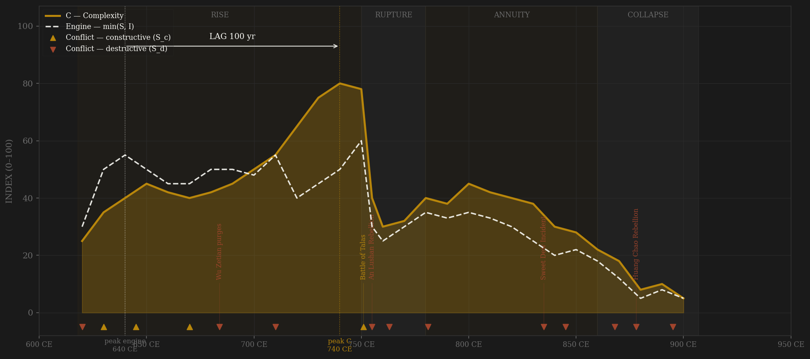
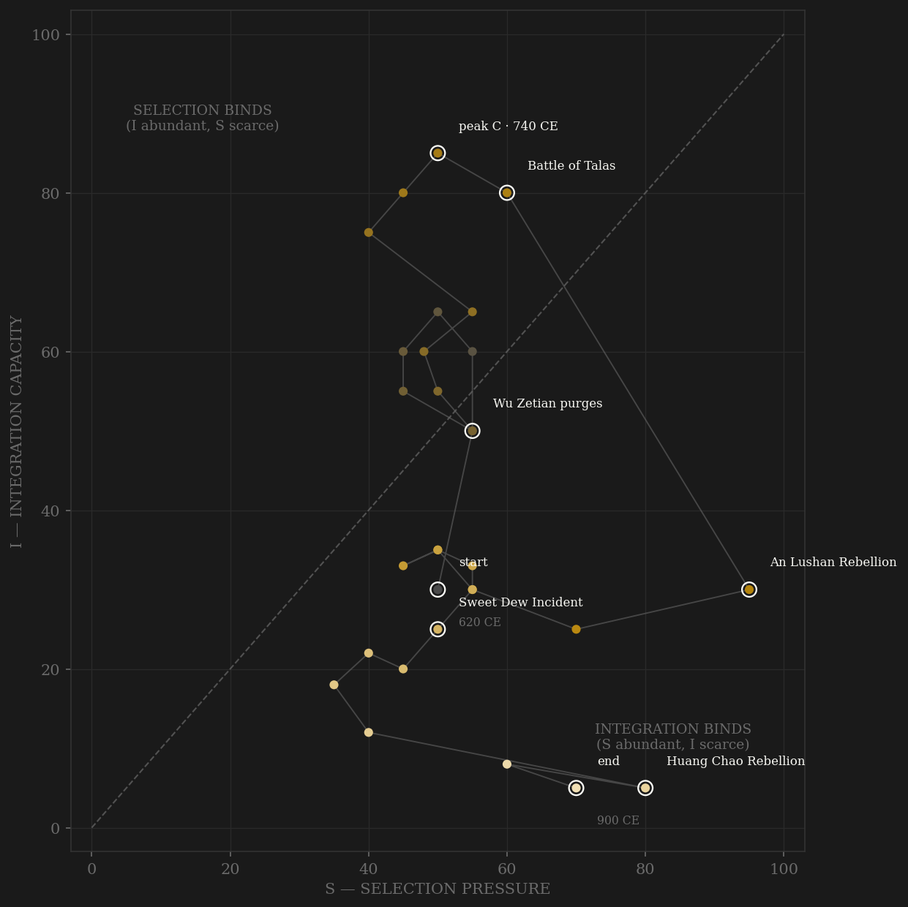

The Tang engine was integration: the Silk Road reopened by the Eastern Turk conquest, fifty tributary states, eight religions coexisting in Chang'an, an examination system pulling talent from below. Complexity followed the engine up — poetry, printing, porcelain, fifty million people. Then An Lushan, a jiedushi commanding three frontier armies, turned the state's own military inward. Integration fell from 85 to 25 in a single decade. The dynasty lasted another 150 years, but as an annuity on past complexity — the engine never restarted.

The trajectory enters at the lower left, climbs the integration axis through the seventh century, and rides high-I / moderate-S through the golden age — selection pressure, not integration, was the binding constraint at peak. An Lushan snaps the trajectory to the attrition quadrant in one step: the fastest quadrant transition in the twelve-civilization sample. The long tail from 780 to 907 grinds toward the origin.
Each conflict is coded by locus and target, never by outcome. External rivalry that disciplines the state without touching its coordination machinery is constructive (S_c). Violence aimed at the polity's own coordination capacity — civil war, purges, succession fights, invasions that penetrate the core — is destructive (S_d). Coding by outcome would make the destructive-selection finding a tautology; coding by locus keeps it falsifiable. Wu Zetian is the demonstration case: her purges are S_d, her examination expansion is S_c — the same reign, decomposed.
| YEAR | CONFLICT | CODE | CODING RATIONALE |
|---|---|---|---|
| 620 CE | Unification wars | Sd | Internal contest for a collapsed Sui state; destructive locus, founding outcome |
| 630 CE | Eastern Turk conquest | Sc | External frontier campaign; opened the Silk Road — rivalry that disciplined |
| 645 CE | Goguryeo campaigns | Sc | External expansion against a peer rival |
| 670 CE | Tibetan wars begin | Sc | Sustained external frontier competition |
| 684 CE | Wu Zetian purges | Sd | Internal: aimed at the court's own personnel; her exam expansion is coded S_c separately |
| 710 CE | Palace coups 710–712 | Sd | Succession violence at the core |
| 751 CE | Battle of Talas | Sc | External frontier defeat vs Abbasids; competitive pressure, core untouched |
| 755 CE | An Lushan Rebellion | Sd | Internal military revolt; state's own army turned on its coordination machinery |
| 763 CE | Tibetan sack of Chang'an | Sd | External origin but core penetration — destroyed coordination capacity, not frontier discipline |
| 781 CE | Hebei warlord autonomy | Sd | Internal fragmentation of fiscal-military control |
| 835 CE | Sweet Dew Incident | Sd | Eunuch counter-purge of the civil bureaucracy |
| 845 CE | Huichang persecution | Sd | Internal coercion; state destroying its own institutional diversity |
| 868 CE | Pang Xun mutiny | Sd | Internal army revolt |
| 878 CE | Huang Chao Rebellion | Sd | Internal; sacked both capitals, Guangzhou massacre ended foreign trade |
| 895 CE | Warlord fragmentation | Sd | Terminal internal contest; dynasty in name only |
| COMPONENT | GRADE | BASIS |
|---|---|---|
| S — Selection | ○ scholar-coded | Composite from wars/succession CSVs (Graff 2002, Twitchett 1979, Peterson 1979) |
| I — Integration | ◐ proxy series | Tributary counts, foreign residents in Chang'an, Silk Road activity, religious diversity |
| C — Complexity | ◐ proxy series | Poetry output, technology innovations, city populations, examination statistics, Maddison GDP/capita |
| Conflict ledger | ◐ event-coded | chinese_dynastic_wars.csv + chinese_succession_violence.csv + reign chronologies |
Decade scores are agent-assembled composites from the source CSVs in data/raw/tang/ (12 files, documented in SOURCES.md). Patterns are robust; individual decade values carry ±10pt uncertainty. Rebuild: scripts/polity_report.py --slug tang